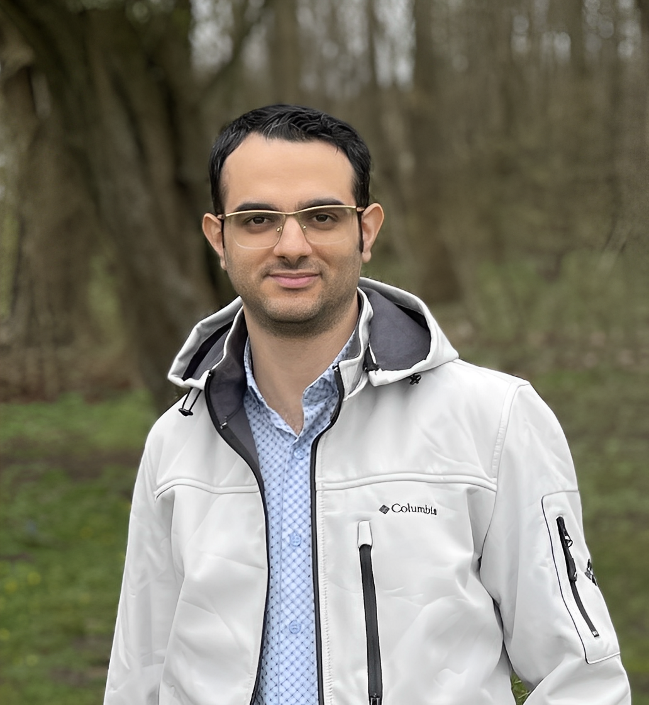
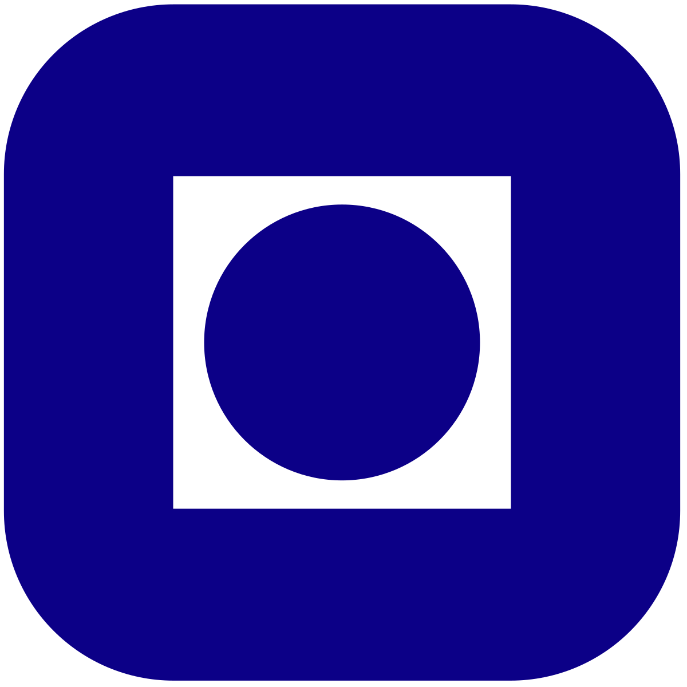

Arash Bahari Kordabad
 |
Arash Bahari Kordabad
|


Research Interests
My research interests primarily lie at the intersection of Markov Decision Processes (MDPs), Economic Model Predictive Control (EMPC), and Reinforcement Learning (RL), with applications in energy systems and autonomous vehicles. Another key focus of my work is providing probabilistic guarantees for stochastic systems under temporal logic specifications. Additionally, my research encompasses distributionally robust optimization, second-order RL algorithms, and data-driven MPC.
Education & Research Experience
| Max Planck Institute for Software Systems, Kaiserslautern, Germany Postdoctoral Research Fellow May 2023 - present |
|
|
Topic: Multi-agent awareness and control with temporal logic specifications Supervisor: Prof. Sadegh Soudjani Projects: SymAware (funded by EIC, May 2023 - Sep. 2025); Auto-CyPheR (funded by ERC, Sep. 2025 - Sep. 2027) |
|
 |
Norwegian University of Science and Technology (NTNU), Trondheim, Norway Ph.D., Department of Engineering Cybernetics Feb 2020 - Apr 2023 |
|
Thesis Topic: “Theoretical properties of learning-based MPC”, link Supervisor: Prof. Sébastien Gros Co-Supervisor: Prof. Anastasios Lekkas Committee: Prof. Ole Morten Aamo, Prof. Lars Grüne, and Prof. Rolf Findeisen |
|
| Aalborg University, Aalborg, Denmark Visiting Ph.D. Researcher, Department of Electronic Systems Nov 2021 - Aug 2022 |
|
|
Research topic: Safe Reinforcement Learning Host: Prof. Rafal Wisniewski |
|
| Sharif University of Technology, Tehran, Iran M.Sc., Department of Mechanical Engineering Sep 2017 - Sep 2019 |
|
|
Thesis Topic: “Control of bifurcation and chatter suppression in peripheral milling process” Supervisor: Prof. Hamed Moradi GPA: 19.41/20 |
|
| University of Tabriz, Tabriz, Iran B.Sc., Department of Mechanical Engineering Sep 2013 - Sep 2017 |
|
|
Thesis Topic: “On the muscle models as viscoelastic material and comparison of force-length models for active skeletal muscle” Supervisor: Prof. Kamal Jahani GPA: 18.1/20 |
|
Selected Publications (Top 5)
- A. Bahari Kordabad, R. Majumdar, H. J. Motwani, S. Soudjani, “On Certificates for Almost Sure Reachability in Stochastic Systems”, accepted for publication in IEEE Transactions on Automatic Control (TAC), 2025.
- A. Bahari Kordabad, E. E. Vlahakis, L. Lindemann, S. Gros, D. V. Dimarogonas, S. Soudjani, “Data-Driven Distributionally Robust Control for Interacting Agents under Logical Constraints”, accepted for publication in IEEE Transactions on Automatic Control (TAC), 2025.
- A. Bahari Kordabad, A. Da Col, A. Ghosh, S. Stroeve, and S. Soudjani, “Robust Model Predictive Control for Aircraft Intent-Aware Collision Avoidance”, Proceedings of the European Control Conference (ECC), 2025.
- A. Bahari Kordabad, M. Zanon, S. Gros, “Equivalence of optimality criteria for Markov decision process and model predictive control”, IEEE Transactions on Automatic Control, 2024.
- A. Bahari Kordabad, D. Reinhardt, A. S. Anand, and S. Gros, “Reinforcement Learning for MPC fundamentals and current challenges”, 22nd IFAC World Congress, 2023.
Selected Talks
- “Quasi-Newton Compatible Actor-Critic for Deterministic Policies,” European Control Conference (ECC), Iceland. 2026
- “Distributionally Robust Control for Chance-Constrained Signal Temporal Logic Specifications,” IEEE Conference on Decision and Control (CDC), Milan, Italy. 2024
- “Robust Model Predictive Control for Aircraft Intent-Aware Collision Avoidance,” European Control Conference (ECC), Thessaloniki, Greece. 2025
- “Reinforcement Learning for MPC: Fundamentals and Current Challenges” in an invited session entitled Recent Advances in Automated Learning and Calibration of MPC Policies, IFAC, +75 audience, Japan. (photo) July 2023
- “Introduction to optimization with temporal logic,” NTNU, Trondheim, Norway. Mar 2023
- “Intersection of Reinforcement Learning and MPC,” Eindhoven University of Technology, Netherlands, Host: Prof. Dinesh Krishnamoorthy. Feb 2023